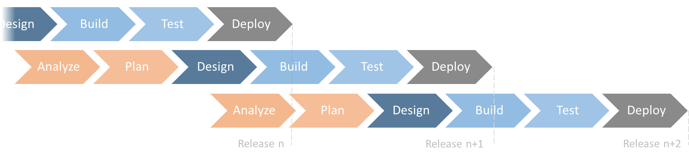

(Web Application) Security Test Automation
marek.puchalski@capgemini.com, @marek_devsec
About me
developer, security maniac, OWASP member
Security in projects
Source: http://www.michaelmolloy.co.uk/construction-photography.html
Waterfall
Source: http://www.letgoyourmind.com/wp-content/uploads/2017/03/buildingtall.jpg
{kind=link}
Agile
Security in waterfall projects
Security in agile projects
Best idea so far
Automate security tests
What is security
OWASP ASVS
- Provides a list of requirements for secure development
- Defines different security assurance levels (Opportunistic, Standard, Advanced, also called Level 1, 2, 3)
- Use it as a development guidance, metric or as a basis for specifying security requirements
Example
Just before we start
- Don't automate everything
- Like always - prioritize
Example 1
ASVS 11.8: Verify that the X-XSS-Protection: 1; mode=block header is in place.
What are headers?
What does X-XSS-Protection do?
- Offers (reflected) XSS protection
- Turned on by default, but works in the sanitization mode
- Turn the most rigorous mode on over X-XSS-Protection: 1; mode=block
Preferred type of test
Source: https://blogs.msdn.microsoft.com/visualstudioalmrangers/2017/...
Code
import static io.restassured.RestAssured.*;
(...)
when()
.get("https://haveibeenpwned.com/")
.then()
.statusCode(200)
.header("X-XSS-Protection", "1; mode=block");
Example 2
ASVS 5.5: Verify that input validation routines are enforced on the server side.
Source: http://demoqa.com/contact/
Request

Response
Code
import static io.restassured.RestAssured.*;
(...)
String body = TEMPLATE.replace("<name>", "Marek")
.replace("<email>", "marek@test");
given(new RequestSpecBuilder()
.addHeader("X-Requested-With", "XMLHttpRequest")
.addHeader("Accept", "application/json, text/javascript, */*; q=0.01")
.addHeader("Content-Type", "application/x-www-form-urlencoded; charset=UTF-8")
.setBody(body)
.build()).
when()
.post("http://demoqa.com/contact/").
then()
.statusCode(200)
.body("mailSent", equalTo(false),
"invalids[0].message", equalTo("Email address seems invalid."));
Wait! Is this really this easy?
I would not call that "easy"
- Understanding security requirements takes time
- We need to deal with traffic on the HTTP level
- Some technologies are easier to automate than others
- We didn't show how to deal with authentication or CSRF protection
But yes, in many cases the code can still be sexy
Example 3
ASVS 10.16: Verify that the TLS settings are in line with current leading practice, particularly as common configurations, ciphers, and algorithms become insecure.
What is TLS?
It's the "S" in HTTPS :)
Understanding TLS is hard
- Understand: PKI, CA, MAC, OCSP, CSR, cipher suites, ...
- Use: RSA, ECDHE, DHE, AES, GCM, CBC, SHA, ...
- Don't use: MD5, RC4, SSL, ...
- Prevent: Drown, BEAST, padding oracle, CRIME, TIME, BREACH, Heartbleed, DUAL_EC_DRBG, ...
How to deal with it?
Code
import io.beekeeper.ssllabs.junit.BaseSSLLabsTest;
@RunWith(Parameterized.class)
public class AppTest extends BaseSSLLabsTest
{
public AppTest(String host) {
super(host);
}
@Parameters(name = "Host: {0}")
public static Iterable<String> data() {
return Arrays.asList("marek.puchal.ski", "www.poczta-polska.pl");
}
}
Example API: https://github.com/beekpr/ssllabs
Example 4
ASVS 1.11: Verify that all application components, libraries, modules, frameworks, platform, and operating systems are free from known vulnerabilities.
Example Equifax (Struts 2, CVE-2017-5638)
BTW: Struts 2 had 15 known vulnerabilities in 2016
How to deal with it?
- Update every library every release
- Or use a library scanning tool
- OWASP Dependency Check
- Victims
- Black Duck (Copilot)
- Many other
Code
.\bin\dependency-check.bat --project victim --scan victim\*
OWASP Dependency Check
Bonus 1
Static code analysis
public List<String> find(String mode) {
String sql = "select text from portfolio where mode = '" + mode + "'";
RowMapper<String> mapper = new RowMapper<String>() {
@Override
public String mapRow(ResultSet rs, int arg1) throws SQLException {
return rs.getString("text");
}
};
List<String> result = jdbcTemplate.query(sql, new Object[] {}, mapper);
return result;
}
Static code analysis
Pro:
- Good at searching after certain weakness categories
Con:
- Commercial tools are very expensive
- Many false positives
- Need to understand the code well
Challenge
- Doing Java?
- You probably know FindBugs already
- Run the FindSecBugs (find-sec-bugs.github.io/) plugin
- Profit
More tools: https://www.owasp.org/index.php/Static_Code_Analysis#OWASP_Tools
Bonus 2
Dynamic code analysis
Primary pentester tool
- Example: Burp Suite, OWASP ZAP, other
- Forward proxy on steroids
- Can perform automated scans (active scan)
Only use it on systems you own or have written permission to test!
Simplest use case
Challenge
- Run Zap, then perform an automated test
- Run Zap, click through the app manually, then run the active scan
- Run your regression suite through ZAP, then run the active scan
- Make it all part of your CI/CD pipeline by integrating it all with Docker+Jenkins
Summary
- First step to security assurance - know what is required
- Don't fear HTTP - implementation is not necessary hard
- Special cases - TLS and vulnerable libraries
- Homework: static and dynamic code analysis
Questions?
@marek_devsec